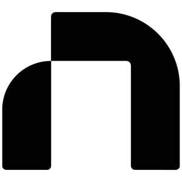

Trade Mark Journal No.2026/007 13 February 2026
UK00004330392 27 January 2026 (35,41,42)

- Class 35
- Marketing agency services; Brand creation services (advertising and promotion); Design of advertising logos; Consultancy services relating to advertising, publicity and marketing; Business marketing consultancy; Advertising, marketing and promotional consultancy, advisory and assistance services; Marketing consultancy; Advertising and marketing; Advertising and marketing services; Consultancy relating to the organisation of promotional campaigns for business; Marketing consulting; Brand strategy services; Design of advertising brochures; Business organization consultancy; Business marketing consulting services; Marketing; Business management and organization consultancy services; Business marketing consultation services; Business marketing services; Graphic advertising services; Consultancy relating to marketing; Marketing advisory services; Creative marketing plan development services; On-line advertising and marketing services; Business consultancy; Banner advertising; Design of advertising flyers; Advertising services to create corporate and brand identity; Design of advertising materials; Advertising and marketing consultancy; Brand positioning; Advertising services to create brand identity for others; Brand positioning services; Advertising copywriting; Advertising, promotional and marketing services; Advertising, marketing and promotional services; Marketing, advertising, and promotional services; Copywriting for advertising and promotional purposes; Product marketing; Advertising, marketing and promotion services; Marketing, advertising and promotion services; Developing promotional campaigns for business; Brand creation services; Digital marketing; Organisation of customer loyalty programs for commercial, promotional or advertising purposes; Consultancy relating to business advertising; Marketing services; Copywriting; Corporate identity services; Advertising; Investigations of marketing strategy; Brand evaluation services; Advertising and promotional services; Promotional and advertising services; Promotional advertising services; Development of marketing concepts; Customer loyalty services for commercial, promotional and/or advertising purposes; Event marketing; Promotion, advertising and marketing of on-line websites; Advertising and marketing services provided by means of social media; Brand testing; Consultancy regarding advertising communication strategies; Developing promotional campaigns for businesses; Business advice relating to strategic marketing; Providing business marketing information; Marketing management advice; Advertising and promotion services; Advice in the field of business management and marketing; Development of promotional campaigns; Development of marketing strategies and concepts; Planning of marketing strategies; Direct marketing consulting; Consultancy relating to advertising and promotion services; Advertising planning; Consultancy relating to demographics for marketing purposes; Professional consultancy relating to marketing; Corporate management consultancy; Preparation of advertising campaigns; Digital advertising services; Marketing analysis; Business advice relating to marketing; Marketing (Business advice relating to -); Business strategy services; Business assistance relating to corporate identity; Marketing information.
- Class 41
- Training; Training and further training consultancy; Training consultancy; Training services; Organisation of training courses; Providing of training; Providing training; Conducting training seminars; Provision of training courses; Instructional and training services; Provision of training; Business training; Conducting workshops [training]; Training in administration; Computerised training; Arranging of training courses; Workshops for training purposes; Computer training; Training services for personnel; Training in business skills; Educational and training services; Written training courses; Computer education training; Training in the use of computers; Staff training services; Personal development training; Organisation of seminars relating to training; Practical training [demonstration]; Training (Practical -) [demonstration].
- Class 42
- Design of logos for corporate identity; Brand design services; Design of graphics and of livery for corporate identity; Logo design services; Design consultancy; Website design consultancy; Consultancy with regard to webpage design; Web site design consultancy; Consultancy relating to the creation and design of websites; Design services; Consultancy relating to the design and development of computer programs; Design consultation; Graphic design services; Software design and development; Illustration services (design); Design of software; Software design; Website design and development; Design services for art-work; Consultancy relating to the design and development of computer software programs; Design services (Packaging -); Design services for packaging; Packaging design services; Design planning; Custom design services; Design of stationery; Website design services; Graphic illustration design services; Consultancy services for designing information systems; Design and development of databases; Website design; Homepage and webpage design; Web site design; Computer website design; Web site design services; Internet web site design services; Web page design services; Website development services; Webpage design services; Web site design and creation services; Website development for others; Web portal design; Design of web sites; Design of home pages and web sites; Design of homepages and websites; Design of websites; Design of web pages; Maintenance of websites and hosting on-line web facilities for others; Creation of internet web sites; Computer site design; Design and updating of home pages and web pages; Design and creation of homepages and web pages; Design and development of homepages and websites; Design and construction of homepages and websites; Design of homepages and Internet pages; Consultancy relating to the design of homepages and Internet pages; Design and graphic arts design for the creation of web pages on the Internet; Design, creation and programming of web pages; Installing web pages on the internet for others; Creating websites; Design and creation of web sites for others; Design and creation of homepages and Internet pages; Designing websites for advertising purposes; Consultancy relating to the creation and design of websites for e-commerce; Design of Internet pages; Design and creating web sites for others; Creation and maintenance of web sites; Design and development of software for website development; Design of logos for t-shirts; Design of brand names; Brochure design; Graphic design; Graphic illustration design; Design of artwork; Hat design; Graphic design of promotional materials; Design of typefaces; Packaging design; Design of packaging; Design of signs; Product design; Business card design; Design of printed material; Design and graphic arts design for the creation of web sites; Packaging designs; Design of printed matter; Graphic art design; Design of exhibition stands; Graphic designing; Design of products; Design services relating to window graphics; Computer graphics design services; Graphic arts design; Design (Graphic arts -); Business card design services; Design services relating to artwork; Services of a graphic designer; Consultancy relating to the design of packaging.
Numen Fort Ltd